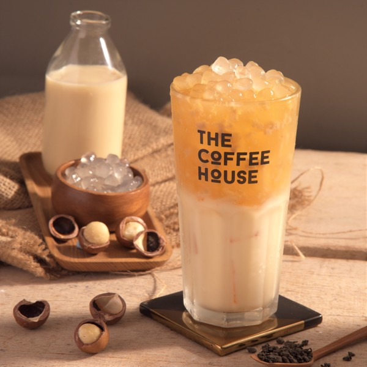

Không chỉ riêng gì Việt Nam đâu, trà sữa đã nổi tiếng và là thức uống yêu thích của người dân khắp các châu lục trên thế giới. Ước tính trà sữa đã có mặt trên hơn 30 quốc gia. Đặc biệt phổ biến ở Đài Loan, Trung Quốc, Nhật Bản, Hàn Quốc, Singapore, Mỹ,...
Đài Loan là “quê mẹ” của trà sữa, xuất hiện vào đầu thập niên 1980, bước sang những năm 1990 thì trà sữa trân châu dần nổi tiếng ở các nước Đông Nam Á.
Năm 1983, ông chủ một thương hiệu trà tại Đài Trung (Đài Loan) đã tạo ra trà sữa lạnh. Bắt nguồn từ một lần chứng kiến cách người Nhật uống cà phê lạnh, ông đã nảy nở ra ý tưởng pha trà sữa lạnh cho các thực khách của mình, không ngờ được đón nhận rất tích cực. Từ đó món trà sữa lạnh phổ biến như một trào lưu mới.
Chưa dừng lại tại đó, trà sữa lại càng phát triển và có những bước đột phá mới khi đến năm 1988, một thành viên của thương hiệu này đã kết hợp món “fen yuan” (loại bánh từ bột lọc được vo tròn) vào trong trà sữa, giúp đồ uống thêm phần thú vị và ngày càng bán chạy. Đây cũng chính là tiền đề cho ra đời loại topping chưa bao giờ hạ nhiệt - trân châu đen.
Trà sữa còn có tên khác là Bubble Tea
Trà sữa có còn có tên gọi khác là Bubble Tea. Nhiều người nghĩ rằng Bubble có nghĩa là trân châu, còn Tea là trà, ghép lại là Trà sữa trân châu. Tuy nhiên, điều đó hoàn toàn không đúng. “Bubble” được hiểu chính xác theo nghĩa trong tiếng Anh là “bong bóng”. Sở dĩ gọi như vậy cũng chính từ câu chuyện hình thành món trà sữa. Trong lúc cho các nguyên liệu khác vào trà, để có được vị ngon đều, hỗn hợp trà phải được lắc mạnh để hoà quyện vào nhau. Bằng cách này đã tạo ra những bọt bong bóng trên ly trà, chính vì thế mà nó được gọi là “Bubble”.
Vẫn có những “lời đồn” rằng trà sữa là thức uống độc hại, tiềm ẩn nhiều nguy hiểm cho sức khỏe. Tuy nhiên, trà sữa cần được “giải oan”. Bởi với thành phần từ trà, sữa tươi, topping được làm từ bột sắn, bột rau câu, phô mai, trái cây tươi,... thì hoàn toàn có thể khẳng định trà sữa là một thức uống lành mạnh. Vì trên thực tế, đây toàn là những thành phần có nhiều lợi ích tốt cho sức khỏe mà người ta vẫn dùng hằng ngày.
Có chăng, vì lợi nhuận mà nhiều thương hiệu, nhiều cửa hàng đã sử dụng những nguyên liệu kém chất lượng, làm ảnh hưởng đến sức khoẻ của khách hàng. Vậy nên, để tìm ra một ly trà sữa thơm ngon, an toàn là chân ái của bạn thì cần đến sự “thông thái” đấy nhé. Bạn cần chọn những thương hiệu uy tín, tại đó họ sử dụng nguyên liệu đầu vào chuẩn, sạch, tự nhiên để tránh những ảnh hưởng xấu đến cơ thể.
Ⓒ Copyright by CLOWNS